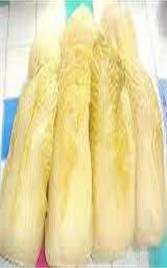

About
LiaoNing
About liaoning about liaoning about liaoning
辽宁
天气
晴
sunsunsunsunsunsun
辽宁省（Liaoning Province），简称“辽”，省会沈阳，辖14个地级市，其中副省级城市2个（沈阳、大连），位于中国东北地区南部，南临黄海、渤海，东与朝鲜一江之隔，与日本、韩国隔海相望，是东北地区唯一的既沿海又沿边的省份，也是东北及内蒙古自治区东部地区对外开放的门户。辽宁是中国重要的老工业基地，是全国工业门类较为齐全的省份之一，是中国最早实行对外开放政策的沿海省份之一，也是中国近代开埠最早的省份之一。
海城馅饼由沈阳市太原街的老山记海城馅饼店经营，由于制作精细，风味独特而声名远扬。老店几经变迁，虽已旧时面貌，但由该店制售的馅饼却广为流传。三鲜疙瘩汤开胃健脾，老少皆宜，是不错的家常汤，在东北大连尤为盛行！海菜包子是大连特有的一种小吃，用海菜、干虾皮做馅，包子的形状有圆有饺，被游客公认为中国最好吃的包子之一。
大连森林动物园，发现王国，圣亚海洋世界，老虎滩。鞍山千山、二一九公园。沈阳方特，兴顺小吃街。丹东鸭绿江、长城。抚顺漂流。盘锦红海滩。庄河冰峪沟。
辽宁--------40%
美食--------30%
玩乐--------20%
辽宁 东北美食
血受
酸菜，古称菹，《周礼》中就有其大名，是一种蔬菜腌制食品，流行于中国东北地区。北魏的《齐民要术》，更是详细介绍了我们的祖先用白菜（古称菘）等原料腌渍酸菜的多种方法。一般腌制多选用韧性较好的多叶蔬菜作为原料加工制作，常见的有白菜、芥菜、雪里蕻、包菜等；因原料的不同有各种不同的品种，各品种的口感差异较大。在中国东北和中国北方地区一般专指以白菜为原料的酸菜（晋语区多用芥菜制作，名为黄菜）。酸菜脱水或凉干之后称为“酸菜干”。在德国和美国也有类似食物，称之为德国酸菜（Sauerkraut）。  属中国东北菜系，也称之为满洲菜，满洲家里，有两样东西不可缺少，一是酸菜缸，二是腌酸菜用的大石头。贫苦人家如此，豪门富户也如此。当年张作霖的大帅府配有七八口酸菜缸，可往往还是不够吃。张大帅的儿子，亦即张学良的弟弟张学思少将，官拜解放军海军参谋长，文革时遭迫害（那都是一些做事情偏激的人，只看表面现象的人，做的错误的事情.
酸菜香气的由来：酸菜一直以其特有的酸香气味赢得广大消费者的喜爱，酸菜是因为酸才香吗？其实不然，只有经精心腌浸的酸菜才会有这种香味，原因是酸菜的香气主要是植物酵素将白菜中的植物糖分解，大部分由植物糖转化成有机酸而使蔬菜变酸香，少部分由于分解不完全而生成酒醇，有机酸可与醇反应生成酯，酯类是有特殊香气的，
要有水便可冲饮。即使一时缺乏，还可以射猎作为补充。在作战中，蒙古骑兵就是依靠马匹和畜群来给养的；这在后勤上大大减少了军队行进的辎重，内蒙牛肉干在远征作战中起着很重要作用
海鲜大全 各种海鲜
由于靠近渤海，因此海鲜很丰富，种类多
海鲜做法很多，煎、烤，炸，煮，每个都有独特的口味。
为了品尝海鲜的鲜，经常在海边抓到就吃。
鲜
ONE TWO
THREE FOUR FIVE
海鲜 海鲜
血好歹
“ 辽宁吃海鲜的地方还属大连，大连三面环海一面靠山，人们靠着大海养活自己，一年四季都可以吃到海鲜，冬天海蛎子。春天吃上各种的鱼，让你吃不重样。夏天吃上各种贝壳类海。秋天肥美的螃蟹。 ”